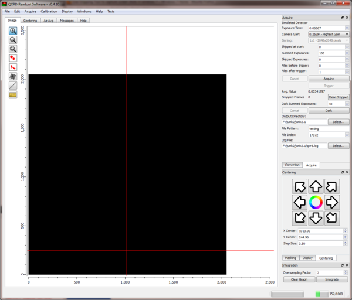
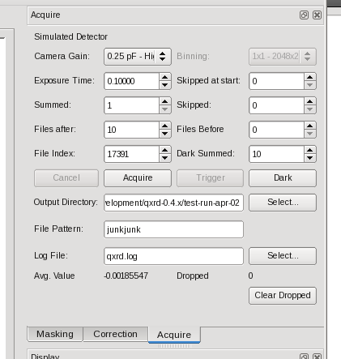
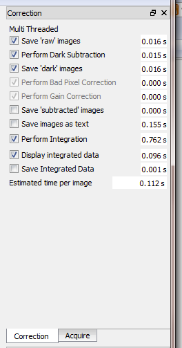

Before you do anything else - open the "Preferences" dialog and check that the detector type is selected correctly - it should be set to "Perkin Elmer Flat Panel". If it is not set correctly, change it in the preferences dialog and click OK. You'll see a message that you need to restart QXRD before the chnages take effect.
When you first run qxrd you'll see the (rather overwhelming) 'default' screen layout.
The first thing you'll probably want to do is to rearrange the QXRD control panels into a more efficient arrangement. You can do this by clicking and dragging on the title bars of the individual control panels and stacking them all in two main groups on the right hand side of the screen, as shown below. You can drag each panel into any of four areas around the border of the qxrd window, on top of another panel (the panels will stack), alongside another panel in the same border area, or as a floating window.
You can also hide a panel by clicking its close button or by choosing the corresponding command from the QXRD 'Windows' menu. If you hide a panel you can re-show it by choosing it from the 'Windows' menu.
A convenient arrangement for the control panels is to stack them on the right hand border of the main window. If your screen is sufficiently large, stack the panels into two groups, or one group if on a smaller screen.

QXRD will remember the panel arrangement and window size between runs.
Two control panels are important for data acquisition, the 'Acquire' panel and the 'Correction' panel. The acquire panel is concerned with the data acquisition process itself, with parameters such as the exposure time, number of images to acquire and output directory choice. The correction panel is used to control what post processing steps are applied to the data after acquisition. On a sufficiently fast system the correction steps are performed entirely in parallel with the acquisition steps, but on slower systems it may be desirable to omit some post processing steps to allow the acquisition to proceed at the maximum speed.
|  |
|
The 'Acquire' Panel |
|  |
|
The 'Correction' Panel |
The 'Correction' panel is used to control which of the available automatic processing steps are performed when images are acquired. Alongside each step is an estimate of how long it is likely to take, averaged over the last 10 or so images - you can use these estimates to determine if you may need to skip some processing steps in order to maintain the desired acquisition data rate.
The estimated times are measured when you run an acquire operation and a running average value is displayed in the panel. Do an acquisition of 20 or so images to get decent values for the timings. The timings may depend on other application parameters - for example the 'Oversampling Factor' strongly affects the integration time. The estimated time per image attempts to allow for the number of CPU cores being used simultaneously, but may not be a very accurate estimate.
Be careful which steps you choose to omit - you probably don't want to perform measurements where nothing is saved, so you'll probably want to keep at least one of the 'Save' steps. A safe choice would be to choose all steps except the "Save images as text" step - this should give a total processing time of about 0.5 seconds. The best choice for rapid data acquisition would be to save the 'raw' images and nothing else - you would then do the dark subtraction and integration in subsequent analysis.
With a fast computer and fast disks it should be possible to acquire, save and integrate data at the maximum frame rate of 15 frames/second.